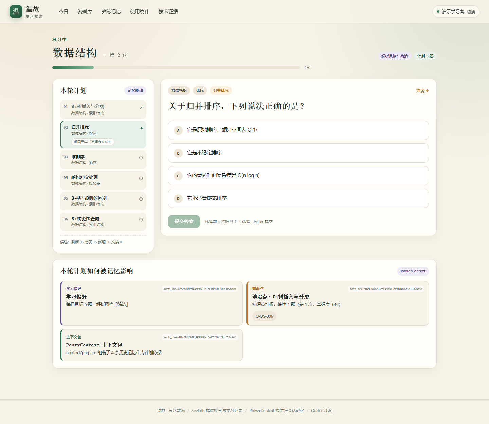
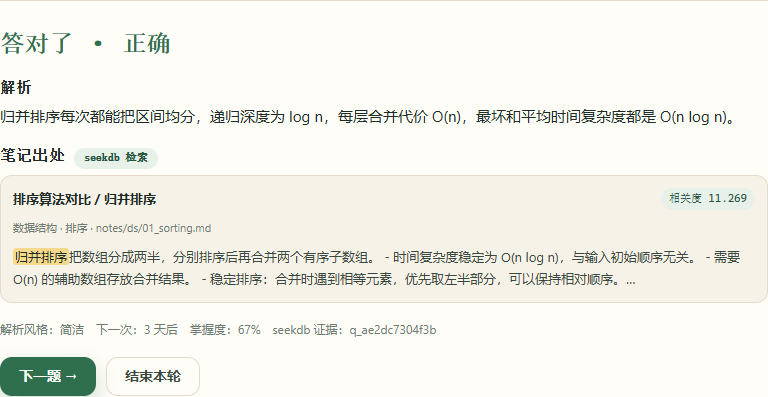
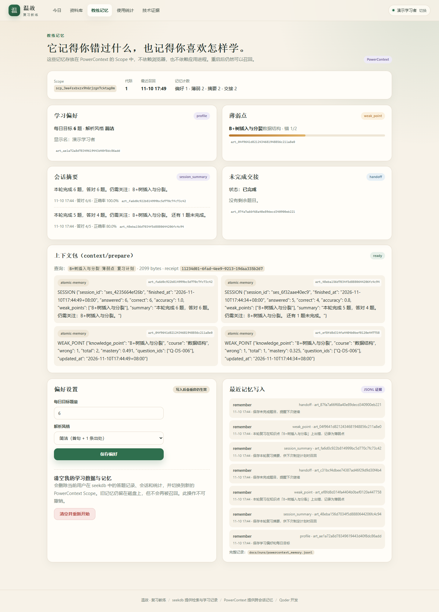
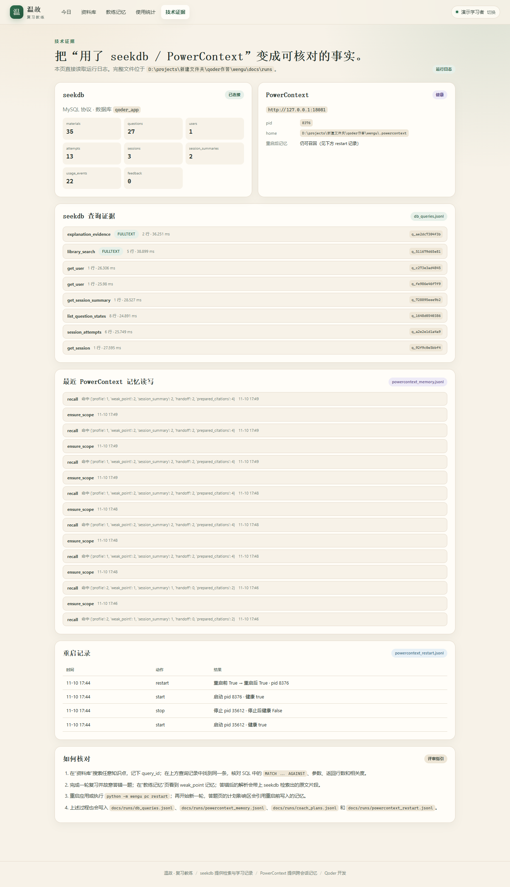
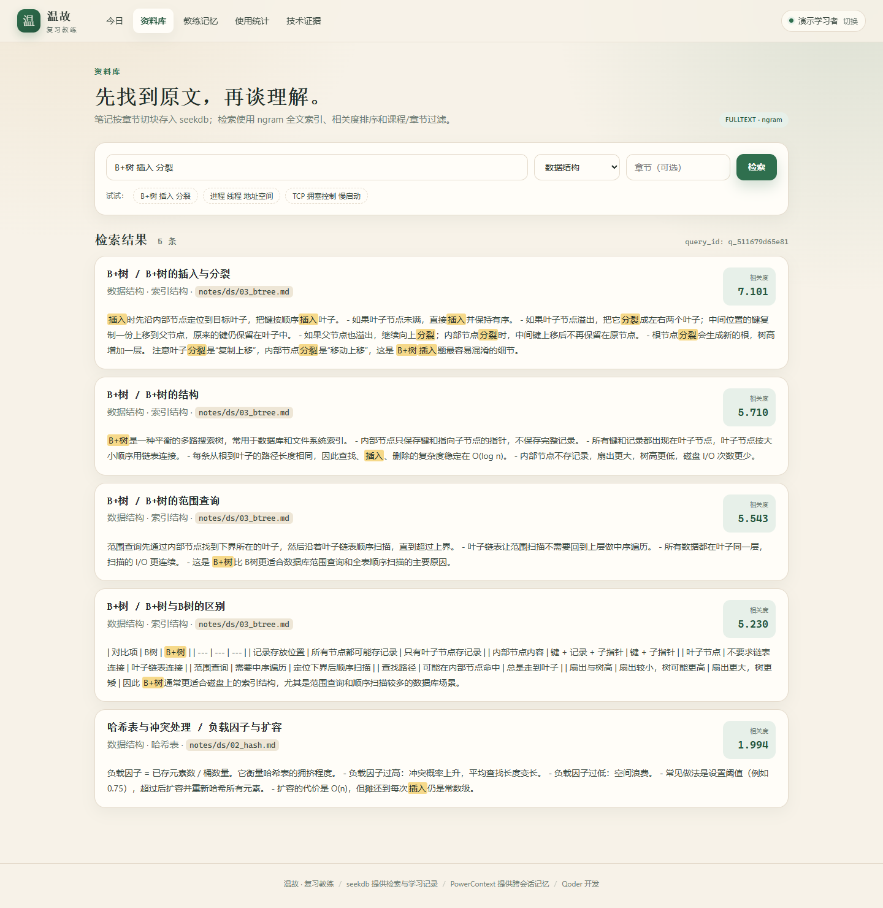
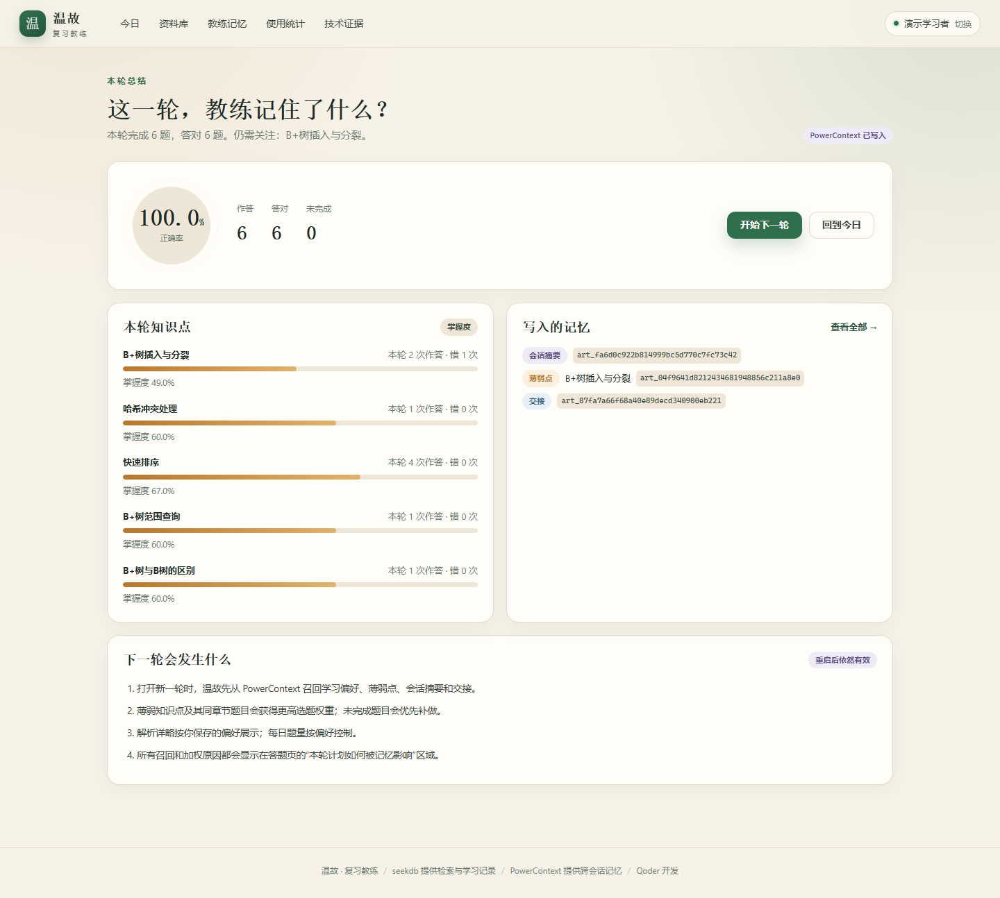
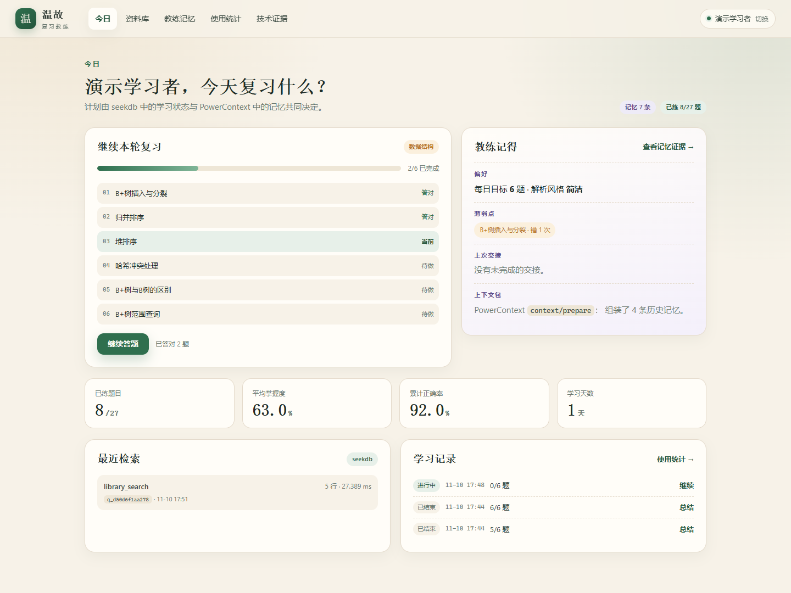

资料散
笔记在 Markdown，题库在表格，错题在截图里。想找一句原文，先翻三个地方。
2026 OceanBase 数据库大赛 · Qoder 生态赛道
温故是一个本地优先的复习教练：用 seekdb 找到笔记原文，用 PowerContext 记住你错过什么、偏好怎样复习。重启之后，它仍然记得。

问题
笔记、题库、错题和复习计划分散在不同地方。温故把它们放进同一个可检索、可记忆、可核对的闭环。
笔记在 Markdown，题库在表格，错题在截图里。想找一句原文，先翻三个地方。
每次都从头开始，不知道哪些题已经会了、哪些题一直在错，时间花在重复的地方。
今天错过的题，明天打开应用时“教练”不记得；计划没有延续性，薄弱点也没有被真正跟踪。
温故把「找原文 → 练题 → 记住」连成一条闭环，而不是再做一个只读的笔记工具。
核心能力
每项能力都对应真实的数据流：seekdb 负责“找得到”，PowerContext 负责“记得住”。
Markdown 笔记按 ## 小节切块，题库用 JSON 导入；课程、章节、知识点、来源路径全部保留。
ngram 全文索引 + 课程/章节/知识点结构化过滤 + 相关度排序；找不到时自动回退到 LIKE 匹配。
到期、薄弱、新题、交接四类候选；单选题自动判分，简答题自评，轻量 SM-2 安排下一次。
每道题答完后，检索对应笔记片段，展示原文高亮、来源文件、相关度和 query_id。
偏好、薄弱点、会话摘要、未完成交接四类记忆；重启后召回，改变下一轮题量、解析详略和选题权重。
SQL、参数、返回行数、相关度、query_id、记忆 artifact_id、重启前后健康状态，都能在技术证据页看到。
闭环
一条可复现的验证路径：第一轮故意错一道 B+树题，重启 PowerContext，第二轮观察计划如何被记忆改变。
答题后，用「知识点 + 题干」检索同课程笔记；seekdb 返回原文片段、来源路径与相关度。
seekdb到期、薄弱、新题、交接四类候选；判分后更新掌握度，用 SM-2 轻量调度下一次复习。
coach本轮结束写回四类记忆：学习偏好、薄弱点、会话摘要、未完成交接。
PowerContext重启上下文服务，用新进程召回；下一轮计划显示“哪条记忆影响了哪道题”。
PowerContext技术分工
不是“装了两个组件”，而是分别承担知识检索与跨会话记忆，并在计划里汇合。
笔记、题库、掌握度、答题记录、会话与使用统计都在这里。中文检索使用真实全文索引，不靠关键词拼接。
materials 笔记片段
questions 题库
question_state 掌握度
attempts 答题流水
sessions 会话
usage_events 使用日志
SELECT id, course, chapter, title, content,
MATCH(search_text) AGAINST (%s IN NATURAL LANGUAGE MODE) AS score
FROM materials
WHERE MATCH(search_text) AGAINST (%s IN NATURAL LANGUAGE MODE)
AND course = %s
ORDER BY score DESC
LIMIT %s;每次查询写入 docs/runs/db_queries.jsonl，含 SQL、参数、行数、相关度与 query_id。
每个用户一个 Scope，四类 Atomic Memory 显式写入；下一轮开始时召回，并用 context/prepare 组装上下文包。
每日目标 6 题 · 解析风格简洁
B+树插入与分裂 · 错 1 次 · 掌握度 0.33
本轮 5 题 / 答对 4 题 / 薄弱点 B+树
Q-DS-005 未完成 · 下次优先补做
“B+树插入与分裂 薄弱点 复习计划” → 2 条 citation：一条会话摘要、一条 weak_point 记忆。
artifact_id · art_388679… / art_6c8dfb…
没有使用向量检索或外部 LLM：当前环境没有可靠、可离线复现的 embedding 来源。主路径是真实中文全文索引 + 结构化过滤 + 确定性调度；升级路径写在 docs/technical_note.md。
验证证据
下方数字来自一次完整的 python -m wengu demo 运行；截图与日志随代码仓库提交。
weak_point，掌握度 0.325MATCH … AGAINST，query_id 与检索响应一致db_queries.jsonlpowercontext_memory.jsonlpowercontext_restart.jsonlcoach_plans.jsonldemo_summary.json





使用数据
统计来自应用真实日志；demo- / pytest- 验证账号会被排除。当前还没有邀请到真实同学使用，所以下面会如实显示“数据收集中”。
当前数据库只有演示账号。邀请同学使用后，运行 python tools/export_usage.py 并重新发布，这里会自动显示真实人数、次数、正确率与反馈。
演示账号这是验证样例，不是真实使用数据。
Qoder 开发记录
从读题、技术探针到编码、调试、测试与发布，主要开发工作都在 Qoder 中完成。完整记录含 Qoder 账号 UID，随代码仓库提交。
读题面、拆硬性验收、对比三个方向；用临时库验证 seekdb ngram 中文全文检索与 PowerContext API 返回结构。
建表/导入/检索、SM-2 轻量调度、四类记忆、Scope 代际、重启管理；实现 Web 页面与 CLI。
走通入口、资料检索、答题、总结、记忆与证据页；修复选题多样性、交接加权、影响拆分等问题；demo 23/23 通过。
22 个单元测试、3 个集成测试；Playwright + 本机 Chrome 生成 11 张真实页面截图。
README、验证样例、技术说明、使用数据导出；用 Qoder Sites 制作并公开本网站。
本地运行
温故需要本机 seekdb 与 PowerContext，因此没有公网在线体验；按下面三步运行即可复现完整流程。
docker run -d --name seekdb-wengu \
-p 2881:2881 \
-v seekdb-wengu-data:/var/lib/seekdb \
oceanbase/seekdb:latestpython -m venv .venv
.venv/Scripts/python -m pip install \
-r requirements.txt
cp .env.example .env
python -m wengu initpython -m wengu server
# 打开 http://127.0.0.1:8000
python -m wengu demo
# 生成两轮复习 + 重启召回的全部证据按 README 启动 → 打开「今日」开始一轮 → 故意错一道 → 结束本轮 → 在「教练记忆」看到 weak_point → 执行 python -m wengu pc restart → 开始下一轮，观察「本轮计划如何被记忆影响」。
代码与材料
基于 oceanbase/powercontext 的 2026-competition-ecosystem 分支开发，本作品资产位于 qoder/ 目录。
公开基础仓库；本作品基于 2026-competition-ecosystem 分支开发。完整源码、种子数据、运行说明与证据位于比赛私有仓库的 qoder/ 目录，评审可在测试平台访问。
配置使用占位值；仓库不包含真实 API Key、密码或本地运行数据。